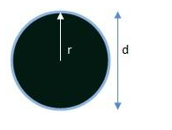
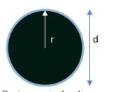

Circle
Area of Circle

r: radius
d: diameter
A: Area
The area of a circle is given by:
A = Π ∙ r2 or A = Π ∙ (d/2)2
Π defines the ratio of any circle's circumference to its diameter and is approximately equal to 3.141593, however the value 3.14 is often used.
Example 1: The diameter of a circle is 16 inches. What is the lateral area?
Solution: A = Pi * r2
Radius = d/2 = 16/2 = 8
A = 3.14 * 82
A = 3.14 * (64)
A = 200.96 cm2
Example 2: From a circular sheet of radius 6 cm, a circle of radius 3 cm is removed. Find the area of the remaining sheet.
Solution: Here, outer radius, R = 6 cm
Inner Radius, r = 3 cm
Area of remaining sheet = Outer area - Inner area
= Pi * (R2 - r2)
= 3.14 ( 62 - 32)
= 3.14 (36 - 9)
= 3.14 x 27
= 84.78 cm2
Hence the area of remaining sheet is 28.26 cm2
Example 3: Find the radius of the circle when its area is known to be 56.52 square centimeters.
Solution: We know that the area of the circle is given by: A = Pi * r2
Isolating r we will get: r2 = A / Pi or r = √(A/Pi)
Thus:
r = √(56.52/3.14) = √(18) centimeters
Example 4: Vandana uses a lawn sprinkler to water the circular region of the lawn having 30 ft in diameter. Calculate the area watered on the lawn.
Solution:
Step 1: The shape of watered region is circular. Formula for area A = Pi * r2 where r is the radius of the circle.
Step 2: The diameter of the circular region is 30 ft i.e. r = 30/2 = 15ft
A = Pi * r2
= 3.14 * 152
=706.5 ft2
Example 5: Determine the area of a circle whose radius is 5 meter.
A = Π ∙ r2 = 3.14 ∙ 52 = 78.5 m2
Example 6: Determine the area of a circle whose diameter is 10 meter.
A = Π ∙ (d/2)2 = 3.14 ∙ (10/2)2 = 78.5 m2
Note that radius = diameter / 2
Perimeter of Circle

Perimeter is the distance around a closed figure and is typically measured in millimetres (mm), centimetres (cm), metres (m) and kilometres (km). These units are related as follows:
10 mm = 1 cm
100 cm = 1 m
1000 m = 1 km
The word 'perimeter' is also sometimes used instead of circumference.
If we know the radius
Given the radius of a circle, the circumference or perimeter can be calculated using the formula bwloe:
Perimeter (P) = 2 · π · R
where:
R is the radius of the circle
π is Pi, approximately 3.142
If we know the diameter
If we know the diameter of a circle, the circumference can be found using the formula
Perimeter (P) = π · D
where:
D is the diameter of the circle
π is Pi, approximately 3.142
If we know the area
If we know the area of a circle, the circumference can be found using the formula:
Perimeter (P) = √(4 · π · A )
where:
A is the area of the circle
π is Pi, approximately 3.142
Example 1:
A circular flower-bed has a radius of 9 m. Find the perimeter/circumference of the flower-bed.
Solution:
P = 2 · π · R
P = 2 · 3.1416 · 9
P = 56.5487 cm
So, the perimeter/circumference of the flower-bed is 56.5487 m.
Example 2: Find the perimeter of the given circle whose diameter is 4.4 cm.
Solution:
Given that:
Diameter of the circle (D) = 4.4 cm.
We know the formula to find the perimeter of the circle if the diameter is given, namely π· D.
Substitute the diameter 4.4 and Pi value as 3.14 in the above formula.
Perimeter = (3.14)(4.4) = 13.82
Therefore 13.82 cm is the perimeter of the given circle.
Example 3: If the radius is 11.7 cm. Find perimeters (circumference) of the circle.
Solution:
Given that:
Radius (r) = 11.7cm
Perimeter (circumference) of circle P = 2 π r
Substitute the r value in the formula, we have:
P = 2 x 3.14 x 11.7
P = 79.56 cm
Thus, the perimeter of the circle is 79.56cm
Example 4: Find the perimeter and area of the circle, if the radius of the circle is 8cm.
Solution: We have given the radius, which is 8cm. So, by using the formula of the perimeter of the circle, we have:
P = 2πr
P = 2×3.14×8
P = 50.24 cm
And for the area of the circle:-
A = π r2
A = 3.14×(8)2
A = 200.96cm2
Example 5: The wheel of a bullock cart has a radius of 6 m. If the wheel rotates once how much distance does the cart move?
Solution:
If the wheel rotates once, the cart will move by a distance equal to the perimeter of the wheel.
Step 1:
P = 2πr
P = 2× 3.14× 6 = 37.68 m
Thus, the bullock cart moves 37.68 m in one revolution of the wheel.